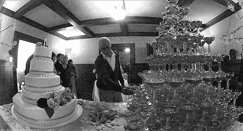
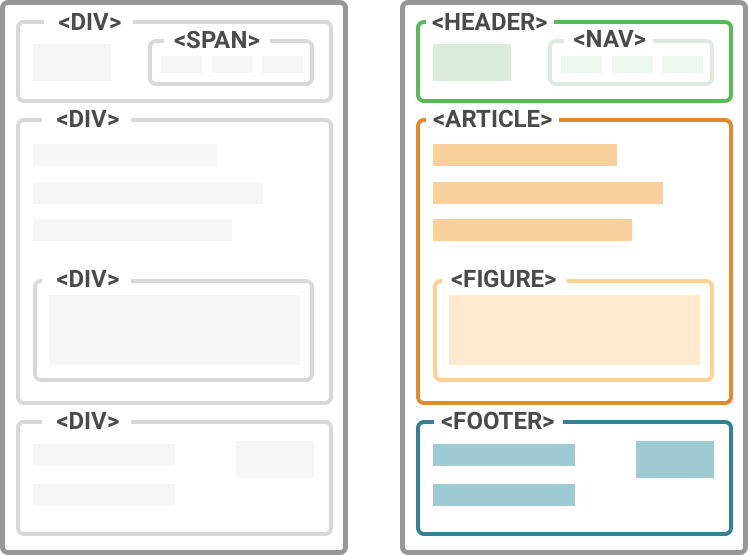
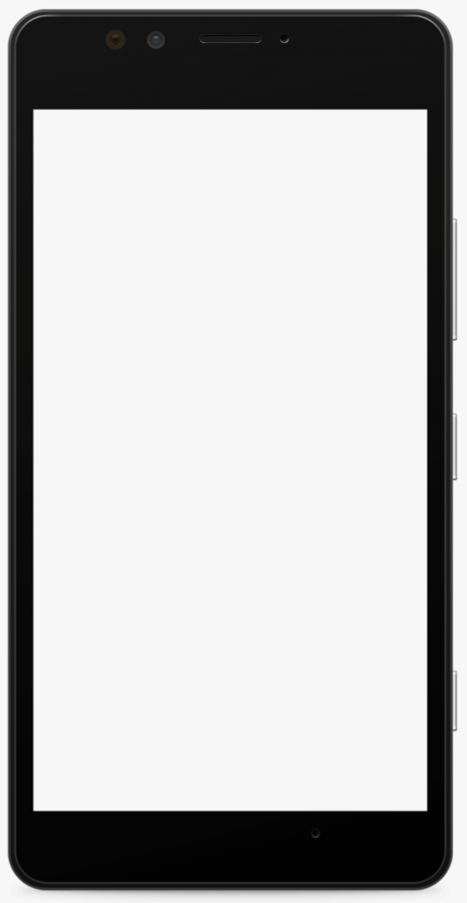

HTML/CSS Basics.
CSS Architecture
Plan
- HTML/CSS Basics
- Preprocessors (HAML, SASS)
- CSS Architecture. BEM
- Semantics, a11y, Performance
- RoR/HTML CSS devs communication
- How to break layout
|
|
HTML
(HyperText Markup Language)
created in 1990 by CERN
HTML is all about:
- content;
- sctructure;
- meta information.
HTML Tags
-
Headings: h1-h6
-
Tables: table, tr, th, td, thead, tbody, tfoot
-
Text: p, span, i, em
-
List: ul, ol, li
-
Landmarks: header, footer, main, article, section, aside
-
Media: video, audio, img, svg, picture
-
Forms: form, input, select, button
CSS (Cascading Style Sheets)
CSS is all about:
- styles;
- visual effects;
- animation;
- transitions;
- transformations.

HAML
Haml is a markup language that’s used to cleanly and simply describe the HTML of any web document, without the use of
inline code.

Code Samples
| HTML |
HAML |
<section class='section'>
<h2>Title</h2>
<p>Lorem</p>
</section>
|
%section.section
%h2 Title
%p Lorem
|
HAML Core Principles
- markup should be beautiful;
- markup should be DRY;
- markup should be well-indented;
- HTML structure should be clear.
SASS
Sass is a preprocessor scripting language that is interpreted or compiled into Cascading Style Sheets.
SassScript is the scripting language itself. Sass consists of two syntaxes. The original syntax, called
"the indented syntax," uses a syntax similar to Haml.

SASS Features
- the indented syntax;
- the ability to split the codebase (@import);
- variables;
- loops (@for, @each);
- conditional statements (@if, @else);
- DRY-features (@mixin, @function);
- warnings and errors (@debug, @warn, @error).
CSS has Advantages and Disadvantages
| Advantages |
Disadvantages |
- cascade;
- inheritance;
- specificity.
|
- cascade;
- inheritance;
- specificity.
|
Maintaining a large project is like this:

link
BEM (Block Element Modifier)
BEM is a methodology that helps you to create reusable components and code sharing in front-end development.
The main idea: everything is a block.

BEM naming
block
block__element
block--modifier block__element--modifier
Why use BEM?
- easy to read and maintain;
- easy to reuse;
- has positive impact for performance of styles rendering.
BEM Disadvantages
- sometimes bem-classes are very long;
- always need to think a lot before creating a new bem-class.
example:
<section class='very-long-block-class-name very-long-block-class-name--one-modifier'>
Semantics. Accessibility. Performance
Semantics it is About Sence

Why should use semantic markup?
- necessary thing for screen readers;
- positive effect for SEO;
- easy for maintain.
Accessibility (a.k.a A11Y)
Web accessibility means that websites, tools,
and technologies are designed and developed so that people with disabilities can use them. More specifically,
people can:
- perceive, understand, navigate, and interact with the Web;
- contribute to the Web.
Video Introduction to Web Accessibility and W3C Standards
How users interact with UI
- mouse;
- keyboard;
- touchscreen;
- screen reader.
Performance
|
Unfortunently, a lot of web sites have a lot of performance issues and looks like this:
(Medium device and regular network)
|

|
Factors That Affect website performance
- server response time;
- assets optimization (styles, scripts, images, etc);
- chache policy;
- contend loading optimization (lazyload).
How to recognize accessible UI?
- loads fast (even on slow network);
- comfortable contrast and font size;
- interactive elements (links, buttons, etc) have a comfortable clickable area;
- fully accessible from the keyboard;
- you can 'view' UI using screen reader.
RoR / HTML CSS devs communication
The best way to avoid troubles